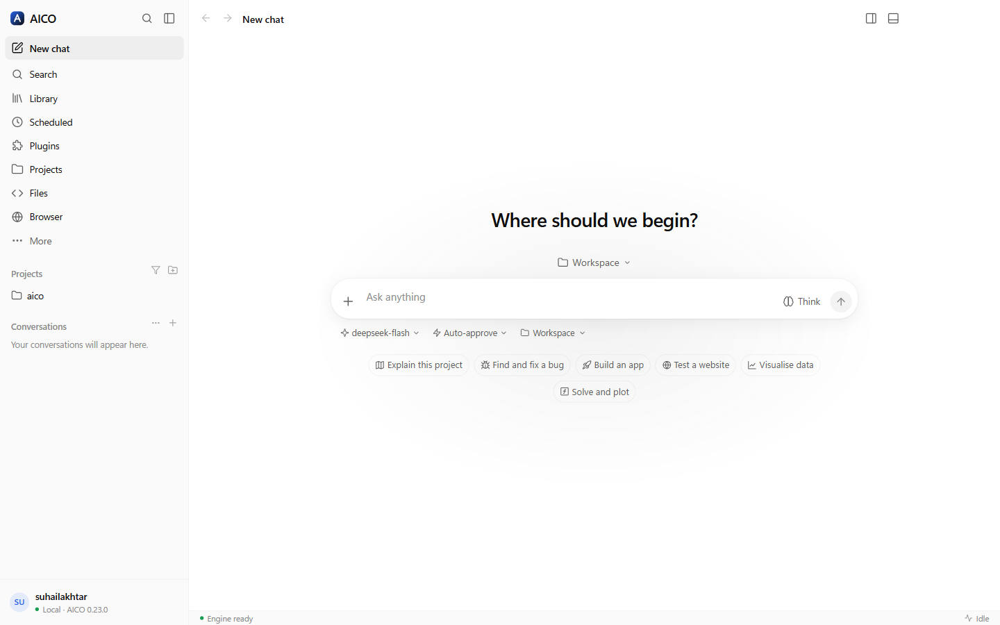
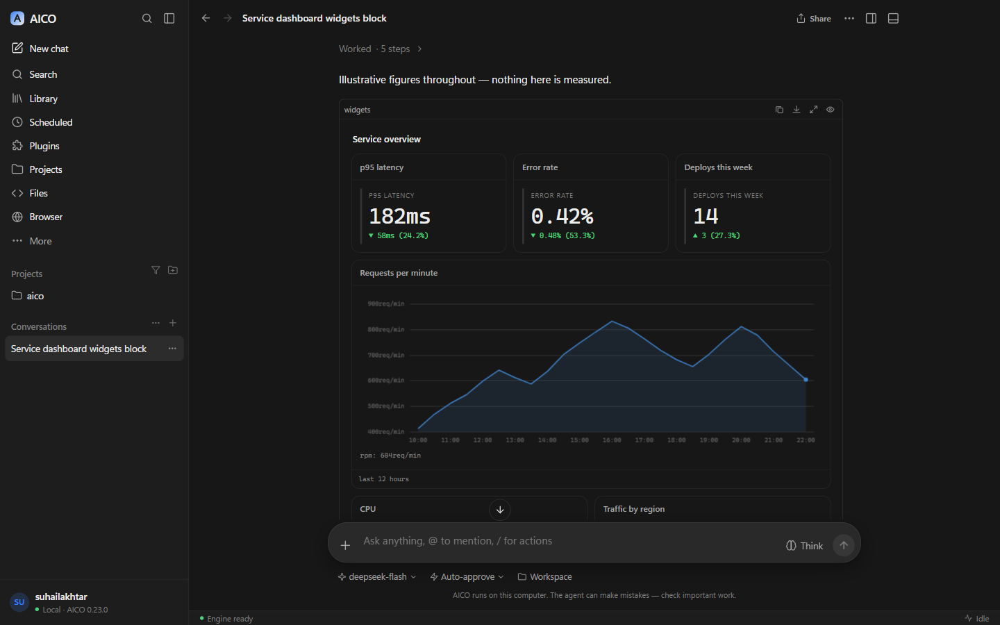
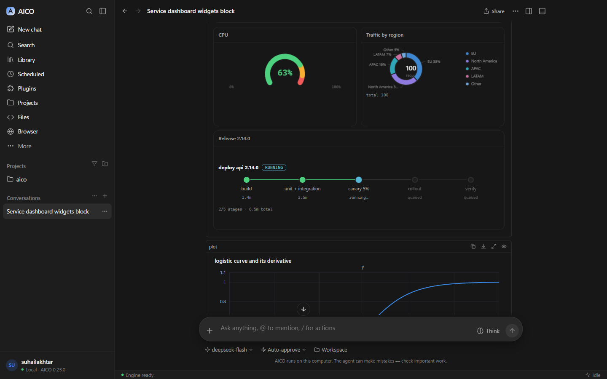
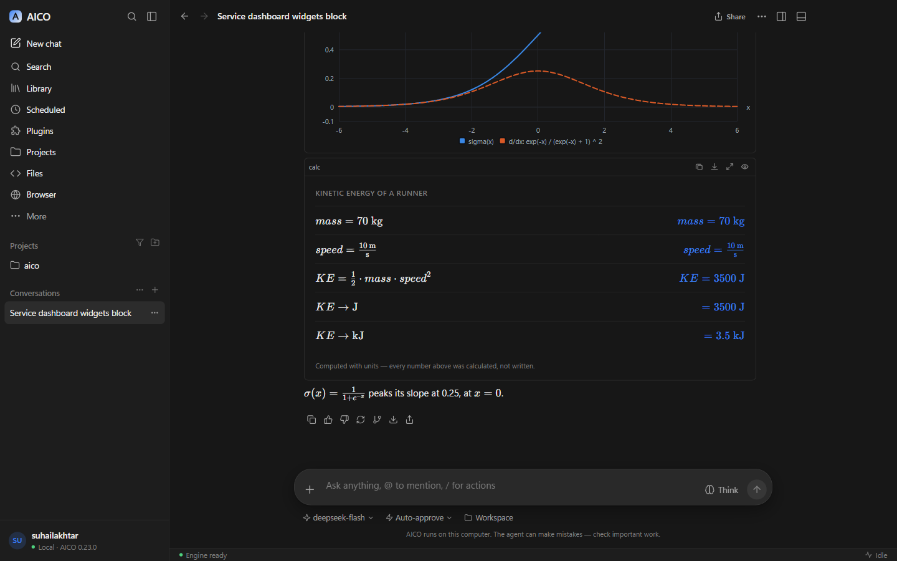
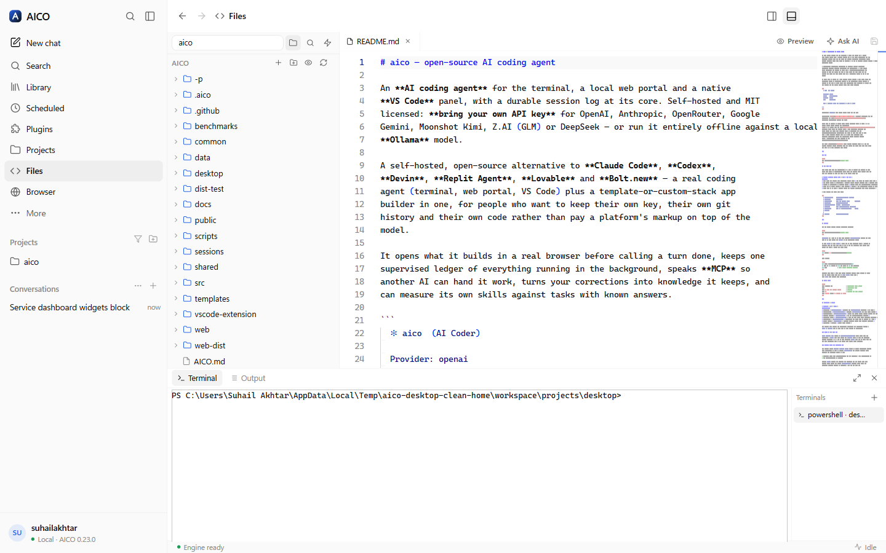
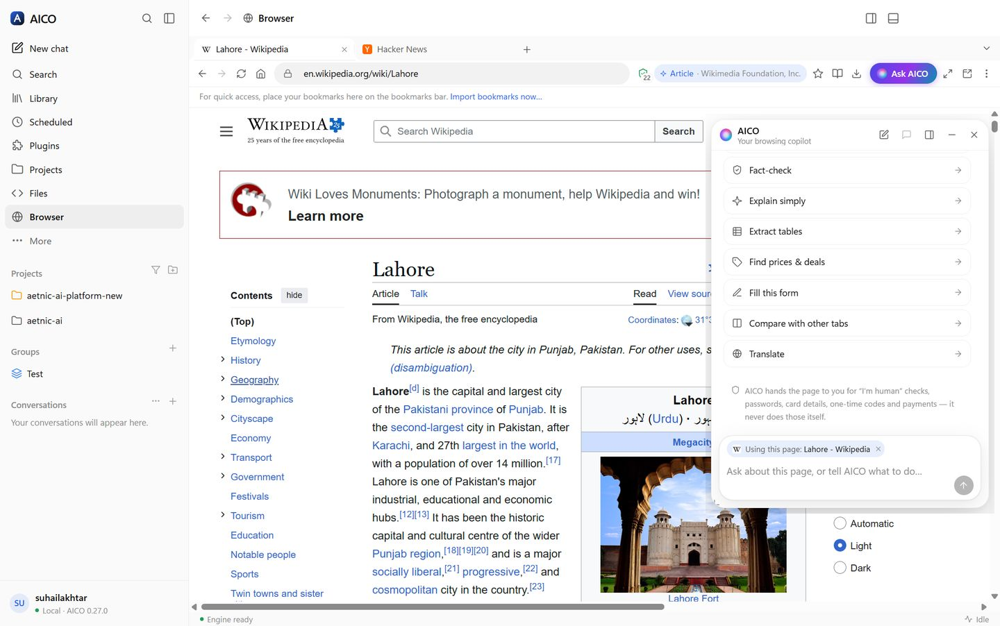
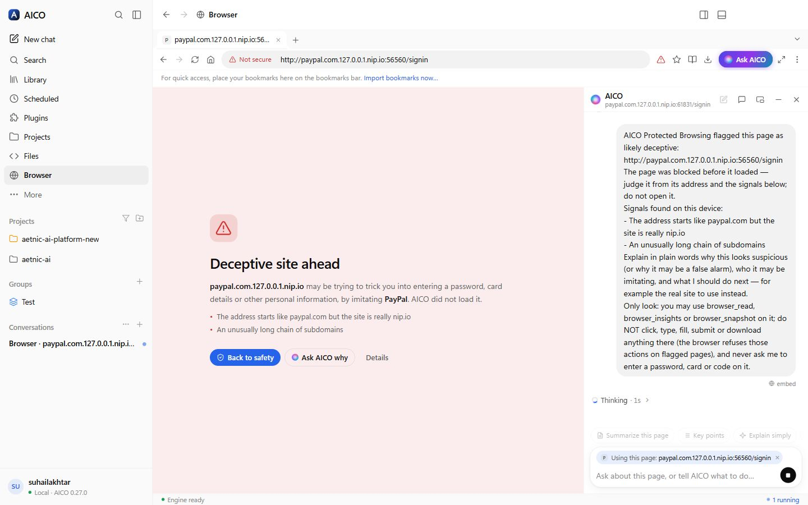
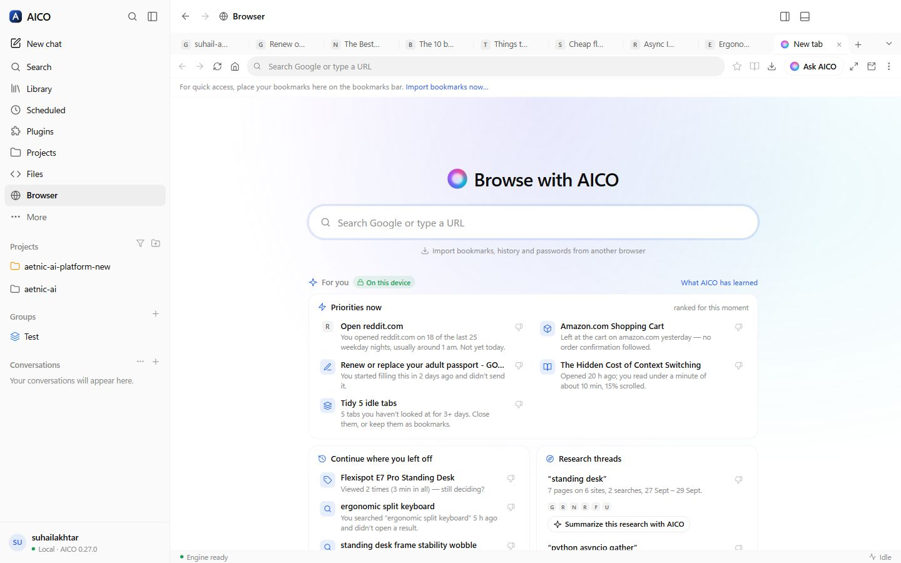
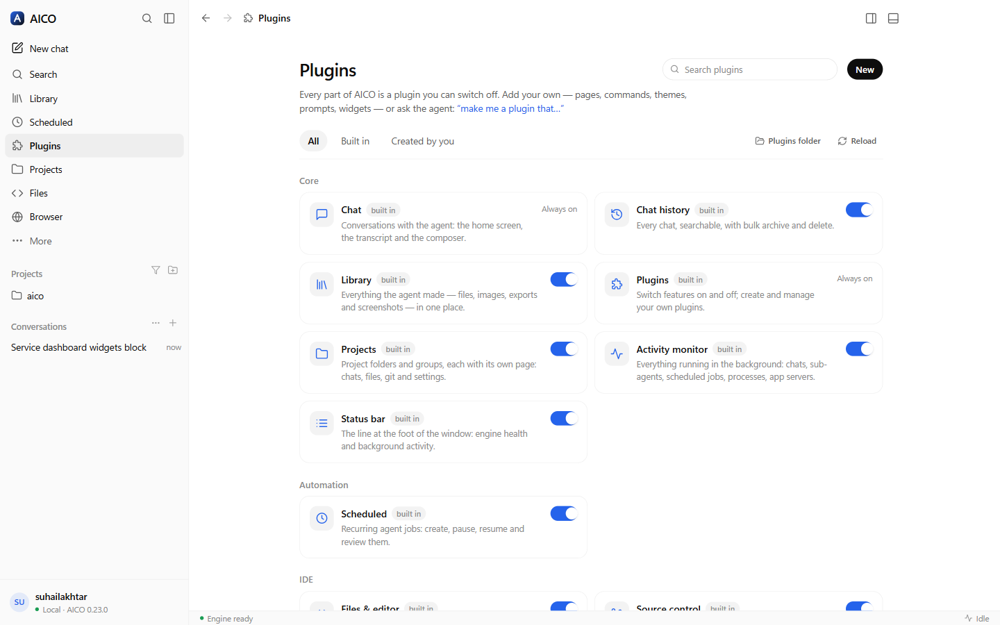

Home → Desktop
AICO Desktop
The AICO agent as a native app for Windows and Linux: a calm chat in front, an IDE behind it — editor, terminals, Git and GitHub — and a browser the agent can drive. It runs on your computer, with your own keys, and nothing about it needs Node installed.
Install it
Download the installer for your system from the
latest release:
AICO-Setup-0.51.0-win-x64.exe for Windows, .AppImage or
.deb for Linux. The builds are not code-signed yet, so Windows SmartScreen
asks once ("More info → Run anyway"). Your chats, providers and settings are the same
ones the CLI, the web portal and VS Code use — everything lives in ~/.aico.

A composer that keeps up with you
/for actions — plan first, how hard to think, how much to ask before acting, attach, mention, change model, branch, export, and every plugin command and prompt. Type to filter, ↑ ↓ to move, Enter to pick; each one confirms what it did.@for files, folders and agents — the project's files are searched as you type, and a mention is highlighted in the box. Anything outside the project is one "Pick files…" away, and Alt+drop mentions a file instead of attaching it.- Back to the start of the answer — when a long reply finishes, the chat jumps to where it began instead of leaving you at its last line (switch it off in the chat's … menu), and the ↑ in a long answer's action row takes you there from the bottom.
- Paste a screenshot to attach it, ↑ in an empty box to bring back your last message, and a draft that stays with its own chat.
Answers that draw themselves — and compute
Everything the web portal renders — ECharts, Vega-Lite, Mermaid, KaTeX with chemistry,
tables — plus a widget kit of 54 dashboard widgets (stat tiles, gauges,
time series, heatmaps, sankey, radar, gantt, pipelines, scorecards, network maps) laid
out on a 12-column grid by a ```widgets block. For maths and physics there
are three blocks whose numbers are computed, not written by the model:
```plot— functions, derivatives (symbolic), parametric and polar curves, and the shaded, calculated area of an integral;```geometry— a construction drawn to scale with its lengths, angles, areas and perimeters measured from the coordinates;```calc— a worked calculation line by line, with units carried through every step, unit conversion and physical constants.
Any answer copies as rich content (charts and formulas as they look, plus the Markdown), and any chat exports as PDF or a standalone HTML page with every visual inlined, as well as Markdown or text.

widgets block: stat tiles and an interactive time series.

An IDE behind the chat
- Files — an explorer and Monaco, the editor VS Code is built on: tabs, quick open (Ctrl+P), search in files, Markdown preview, and live reload when the agent edits a file you have open. "Ask AI" sends the file or the selection to a chat.
- Terminals — real pseudo-terminals (PowerShell on Windows, your shell on Linux), not a pipe, in a bottom panel you toggle with Ctrl+J.
- Source control — status, staged and unstaged changes with diffs, stage, unstage, discard, commit (or have the agent write the message), branches, stash, fetch, fast-forward pull and push, and the full history. It never force-pushes, never resets, and a pull that would need a merge says so.
- GitHub — pull requests with checks, files and diff; issues; Actions runs; open, comment, check out, merge — and "Review with AI", "Fix with AI", "Diagnose" on anything. Through the GitHub CLI's own sign-in: AICO never stores a GitHub token.
- Activity — everything running in the background in one list: chats mid-turn, sub-agents, scheduled jobs, processes, app servers, terminals — with Stop.

An AI browser
A real browser — tabs you drag, pin, mute and reopen (Ctrl+Shift+T), a bookmarks bar with folders and sub-folders you drag things between, a bookmark manager, history, downloads, find, zoom, print, reader mode, full view, full screen, picture-in-picture — and its own window when you want one: Ctrl+Shift+N moves every tab out without reloading anything, and closing it brings them home. Sign-ins, cookies and site storage live in AICO's own folder, so they survive updates and even an uninstall and reinstall; your tabs come back where you left them.

Private and protected by default. Shields block trackers (grouped by company) and third-party cookies, connections are upgraded to HTTPS, Global Privacy Control is sent, and the browser presents a standard Chrome identity. Look-alike and phishing pages are stopped before they load — and AICO checks them for you automatically, explaining what it found without touching the page. Risky downloads are flagged and marked as coming from the internet. Insights show where your time went and what was blocked, counted only on your computer.

It learns you — on this device. From your browsing it learns your interests, routines ("reddit.com on weekday nights"), the site you usually open next, research threads, and what you left unfinished — a cart, a half-read article, a form you started. The new-tab page turns that into Priorities now, Continue where you left off, Research threads and Tidy idle tabs, each saying why it is there; Not interested teaches it, and you can view, pause or forget all of it. Ask the copilot "what was I researching last week?" or "clean up my idle tabs" — it uses what the browser learned, and asks before it closes anything.

Ask about any page, or let it do the work. The copilot suggests what fits the page: Compare prices and Is this a good deal? on a product, Fact-check an article, Scale to 2 servings on a recipe, Draft a reply in your mail, Review this order before I pay at a checkout. Right-click any link, image or selection to ask about it. The agent reads pages as clean Markdown, fills whole forms — with your saved autofill profile when you ask — answers dialogs and reports what changed after every action, with Stop / Take over one click away.
Bring everything over. Import bookmarks, history and addresses straight from Chrome, Edge, Brave, Vivaldi, Opera and Firefox (their files are only read), and passwords from the export file your browser or password manager makes. Passwords live in one encrypted vault; the agent can sign in from it on the site a credential belongs to, but the agent, the copilot and the model never see a value. It never solves CAPTCHAs or "I'm human" checks, and a purchase, send or delete waits for your Allow — enforced in code.
It knows what you have open, and what you read. The copilot keeps a one-line picture of every open tab — page type, price, rating — so "which of my open tabs is cheapest?" needs no clicking around. Turn on memory by meaning and it remembers the pages you actually read, encrypted on this computer, so "where was that red leather jacket I looked at last week?" finds it after the tab is long closed.
Many agents, one browser, no collisions. Each chat drives its own background tabs, labelled with the chat's colour, so two projects can use the browser at once while the page in front of you stays yours; a tab two chats want is taken in turn. The copilot answers about the page, and hands real work — code, projects, servers — to a proper chat with the page attached.
It can't be talked into things. A page can hide instructions for an AI in text you cannot see. Before the model reads anything, AICO strips invisible text and marks instructions aimed at the AI as untrusted page content; the shields panel lists what it caught.
And it can see what it looks at. On a model that reads images, a screenshot of the page, an image file it reads, a picture it fetches from the web, or an image any MCP tool returns is shown to the model — not just the caption beside it. Which models read images is learned, not guessed: "Test" on a provider shows its default model a tiny picture and remembers the answer on this computer.
Answers about the world — maps, weather, videos, sources
Ask for places and you get an interactive map with pins and cards that expands into a full map with a list and an "Open now" filter. Weather arrives as a forecast card, money as a live converter, a recipe as a YouTube player that loads when you press play, shopping as product cards with a comparison, and writing as an editable draft. The agent can generate images with your own OpenAI or Gemini key. Under every answer: copy, 👍 / 👎 with a note, retry, share, and Sources — the pages it actually searched and read, in a panel beside the chat — plus "…" for Branch in new chat and Read aloud. Tooltips look like the rest of the app, and your profile menu has Appearance, Your data, Engine and Help submenus.
Credentials the agent uses but never sees — and your servers
Ask AICO to set up a server and it creates the service's admin account itself: a strong
password stored straight into the credential vault, bound to that host.
The model only ever handles a name; trusted code puts the real value in at the moment of
use and blanks it out of everything that comes back — tool output, logs, transcripts, even
encoded. Later, "show me the portal" signs the browser in from the vault. One vault holds
browser passwords, SSH keys, API tokens and WinRM, SNMP and database credentials, sealed
with your OS keychain, managed in a Credential Manager with an audit of every use. The
agent runs SshExec, SshCopy, SshTunnel,
HttpRequest, WinRmExec and SnmpQuery with pinned
host keys, and asks before a first connection or anything destructive.
Canvas — write together
For anything you will iterate on — an email, a report, a spec, a code file — the agent opens a document beside the chat (AICO Docs): an outline of placeholders first, then each section written while you watch. You edit the page in place, block by block; add tables, charts, diagrams, infographics and images; comment with @AICO; use tabs and templates; and export to Word, PDF, HTML or Markdown with everything as it looks, a contents page and a cover. The agent edits the same document and your open panel updates live. Every save is a version with who wrote it, any version can be restored, and Ask AI on a selection rewrites just that passage. Live sports scores, fixtures and tables arrive as scoreboard cards.
Always on — and it asks before anything big
Jobs AICO sizes at more than about three hours stop for your approval with a proposal —
research, design, milestones and acceptance criteria, time and cost — then run milestone by
milestone, resumable, inside your budget. An independent Sentinel reviews
high-risk actions and can only stop or escalate them. A morning brief ranks
failed CI, PRs waiting for you, new advisories and inbox approvals. AICO learns how you
work from your feedback, as rules you accept. Teach AICO records a
workflow in its browser and replays it with new values. Work in spreadsheets
with Excel formulas and .xlsx export, documents designed per type, an Artifacts
panel, and refactor whole codebases with previewed, checked, reversible changes.
Documents and presentations that look designed
Every kind of document gets its own design — a proposal's cover and document control, a technical design's architecture diagrams, a report's charts, an SOP's numbered procedure — and exports to Word and PDF with real styles, numbering, a contents page with real page numbers, captions and repeating table headers. Presentations come with real layouts, 12 themes, speaker notes and present mode, and export to editable PowerPoint. Select any part — a sentence, table cells, a chart, a diagram, a slide or one bullet on it — and Ask AICO changes only that, in the document's own style (a slide still fitting its layout), with a before/after you accept or reject.
It knows you — and you control what it knows
Recall indexes your memories, knowledge and every past session on this machine — by words, and by meaning once you choose an embeddings model — so "what did we decide last week?" has an answer, and only relevant memories are sent. About you learns your stack, interests, way of working, likes and dislikes in the background, from your work and a summary of your browsing (domains and topics, never pages); every fact shows why, and you confirm, edit, hide, forget or erase it. Sensitive traits are never inferred. Give each job its own model — chat, helpers, reviewers, background, Sentinel, vision, embeddings — with price and local/cloud shown, and keep personal data on a local model if you choose.
Agents in parallel, a Tasks panel, a terminal that helps
Helpers run side by side, each in its own git worktree when they write code. Background agents report their full result back into the chat, stay inside the parent's limits, can be continued, and resume after a restart. The Tasks panel shows every job live — helpers as a tree, time, tokens, cost, step, progress and output — with stop, pause and retry. Full autonomy stops the "are you sure?" questions while clear harm is still refused. Terminals follow your project, offer Explain · Fix with AICO on a failed command, watch dev servers for errors, show the agent's own commands live, save commands as scripts, tools or jobs, and open SSH sessions from the vault without showing the password. Artifacts preview by type — images, documents, sheets, PDFs and live HTML in a sealed sandbox.
Code map — see how your project fits together
Every project gets a Code map: an accurate, local graph of its files, modules and
symbols across TypeScript/JavaScript (with @/ aliases and barrels), Python, Go, Java,
Kotlin, C#, PHP, Rust and Ruby. Explore the architecture, see the impact of a change, the path
between two files, cycles, hotspots, files that change together and what your uncommitted work
affects; method calls are linked by type and interfaces explain which types implement them.
Select anything and Ask AICO with exactly that context. The agent checks its own edits
against it and is told which callers it has not updated yet, and your morning brief flags new
cycles, layering breaks and dead files.
Security built into every change
A security scan on every commit, CodeQL, dependency, lockfile and licence checks, an SBOM on every release and an 1,100-attack pen-test suite in CI. Every guard fails closed; a cloned repository's settings can only tighten safety; full autonomy and anything that loosens safety need a real person. The agent's shell cannot write outside your project, download programs or install software globally without you, and the code AICO writes for you gets the same checks. In the browser, local dev servers with self-signed certificates open after your Advanced → Proceed, bound to that certificate and marked Not secure.
Agents, skills and tools you can verify
Build agents in Claude's format with their own instructions, model, skills, tools and MCP
servers, delegation rules, an autonomy ceiling, a budget and the paths they may write — all
enforced by the engine. aico agent certify runs a safety pack and the agent's own
golden tasks before it may run unattended. Custom tools wrap a command or an HTTP call with a
risk class, previews for destructive calls and secrets from the vault. Import Claude skills
through a security scan and review, export them back, or let skill-author write one
that must beat no skill. MCP runs on the current spec with pinned tools. Unattended runs park
anything that needs you in a "Waiting for you" inbox and run exactly what you approved.
Skills and agents, made your way
- Skills in Claude's format — import a
.skillor.zip, a bareSKILL.md, or a folder with its scripts, references and templates; export any skill as a.skillthat installs in Claude too. Write one yourself, or ask the agent to create or improve one. - Your own agents — instructions and role, goals, the tools it may use (built-in or any MCP server), the skills it reaches for, its own model, and its own knowledge and scripts (kept as a companion skill). Talk to one with
@name, or let the orchestrator hand it work.
Looks after itself
- Automatic updates — downloaded in the background, with a notification when one is ready. It restarts when you say so, or waits until running work has finished, and reopens where you were; switch it off in Settings.
- Backup and restore — settings, preferences, plugins, skills, agents, memory and scheduled jobs (chats and API keys only if you choose) in one file, to move to another machine.
- Right-click menus everywhere you expect them: spelling suggestions, cut, copy and paste, links and images, and back, forward and reload in the built-in browser.
Every piece is a plugin — and the agent can write them
Chat history, Library, Scheduled, Projects, Files, Source control, GitHub, Browser, Terminal, Apps, Activity, the status bar — each is a plugin that registers its pages, commands and settings the same way yours would, and each can be switched off. A plugin is a folder with a JSON manifest: sidebar pages (Markdown with every widget, prompt boards, link lists, or your own HTML in a sandbox), palette commands, themes, quick prompts, status items, chat widgets and standing instructions.
The agent knows the whole IDE through its own tools — what is open, every view and command, every plugin — and can reshape it for you without anyone touching AICO's code: "make me a plugin that…" and it writes, validates and installs one, then opens it.

One engine, four surfaces
The desktop app is a client, not a fork. It runs the same engine as aico serve
in a process of its own (Electron's Node, so no install is needed), shares the web
portal's conversation state and renderers, and keeps its own code for what only a
desktop can do: the window, tray and notifications, the IDE, the browser, and plugins.
A chat started in the desktop opens in the browser client, in VS Code and in the
terminal, and Open in web browser is one click in the account menu.